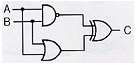
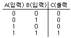
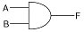
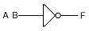
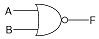
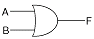
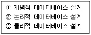
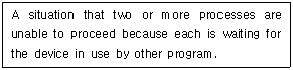

정보처리기능사 (2009-03-29 기출문제)
1과목: 전자 계산기 일반
1. 명령어(Instruction)의 구성에서 처음의 바이트(Byte)에 기억되는 것은?
- Operand
- Length
- Comma
- Op code
(정답률: 84%)

2. 다음 주소지정 방법 중 처리속도가 가장 빠른 것은?
- direct address
- indirect address
- calculated address
- immediate address
(정답률: 81%)
3. 다음 중 불(Boolean) 대수의 정리로 옳지 않은 것은?
- A+A'=1
- A+0=0
- A · A'=0
- A+A=A
(정답률: 74%)
4. 그림과 같은 논리회로의 출력 C 는 얼마인가?(단, A=1, B=1)

- 0
- 1
- 10
- 11
(정답률: 73%)
5. A · (A · B + C)를 간단히 한 결과로 옳은 것은?
- A·(B+C)
- A
- B
- C
(정답률: 85%)
6. 1면에 100개의 트랙을 사용할 수 있는 양면 자기디스크에서 1트랙은 4개의 섹터로 되어 있으며 섹터 당 320word를 기억시킬 수 있다고 할 경우, 이 디스크는 몇 word를 기억시킬 수 있는가?
- 372000
- 256000
- 254000
- 124000
(정답률: 70%)
7. 동시에 여러 개의 입/출력장치가 작동되도록 설계된 것은?
- Simplex channel
- Multiplexer channel
- Select io channel
- Register channel
(정답률: 88%)
8. 정보처리 속도 단위 중 초당 100만 개의 연산을 수행한다는 의미의 단위는?
- MIPS
- KIPS
- MFLOPS
- LIPS
(정답률: 84%)
9. JK 플립플롭에서 J=0, K=0 이 입력되면 동작상태는 어떻게 되는가?
- 변화 없음
- Clear 상태
- Set 상태
- 반전
(정답률: 77%)
10. 로더(loader)의 기능이 아닌 것은?
- 할당(allocation)
- 링킹(linking)
- 재배치(relocation)
- 스케줄링(scheduling)
(정답률: 66%)
11. 주소 10에 20이란 값이 저장되어 있고, 주소 20 에는 40이라는 값이 저장되어 있다고 할 때 간접 주소 지정에 의해 10 번지를 접근하면 실제 처리되는 값은?
- 10
- 20
- 30
- 40
(정답률: 67%)
12. 16진수 2C를 10진수로 변환한 것으로 옳은 것은?
- 41
- 42
- 43
- 44
(정답률: 75%)
13. 2진수 0110을 그레이코드로 변환하면?
- 0010
- 0111
- 0101
- 1110
(정답률: 68%)
14. 다음 진리표에 해당하는 GATE는?





(정답률: 81%)
15. 컴퓨터 시스템에서 명령어를 실행하기 위하여 CPU에서 이루어지는 동작 단계의 하나로서, 기억장치로부터 명령어를 읽어 들이는 단계는?
- 재기록(writ back) 단계
- 해독(decoding) 단계
- 인출(fetch) 단계
- 실행(execute) 단계
(정답률: 62%)
16. 하나의 레지스터에 기억된 자료를 모두 다른 레지스터로 옮길 때 사용하는 논리연산은?
- rotate
- shift
- move
- complement
(정답률: 68%)
17. 현재 실행 중인 명령어를 기억하고 있는 제어장치 내의 레지스터는?
- 누산기(Accumulator)
- 인덱스 레지스터(Index Register)
- 메모리 레지스터(Memory Register)
- 명령 레지스터(Instruction Register)
(정답률: 72%)
18. 기억장치 고유의 번지로서 0,1,2,3....과 같이 16진수로 약속하여 순서대로 결정해 놓은 번지, 즉 기억장치 중 기억장소를 직접 숫자로 지정하는 주소로서 기계어 정보가 기억되어 있는 곳을 무엇이라고 하는가?
- 상대주소
- 절대주소
- 완전주소
- 약식주소
(정답률: 81%)
19. 레지스터, 가산기, 보수기 등으로 구성되는 장치는?
- 제어장치
- 입/출력장치
- 기억장치
- 연산장치
(정답률: 76%)
20. 전가산기(Full Adder)는 어떤 회로로 구성되는가?
- 반가산기 1개와 OR 게이트로 구성된다.
- 반가산기 1개와 AND 게이트로 구성된다.
- 반가산기 2개와 OR 게이트로 구성된다.
- 반가산기 2개와 AND 게이트로 구성된다.
(정답률: 79%)
2과목: 패키지 활용
21. 판매 테이블에서 품명이 ‘카메라’인 항목을 삭제하는 SQL 문은?
- DELETE FROM 판매 WHERE 품명=‘카메라’;
- DELETE FROM 품명=‘카메라’ WHERE 판매;
- DELETE SET 판매, WHERE 품명=‘카메라’;
- DELETE SET 품명=‘카메라’ WHERE 판매;
(정답률: 59%)
22. 데이터베이스 설계 단계의 순서로 옳은 것은?

- ② → ① → ③
- ③ → ① → ②
- ① → ② → ③
- ① → ③ → ②
(정답률: 85%)
23. 급여 테이블에 데이터를 입력한 후 시간외수당 필드가 누락되어 이를 추가하고자 할 경우에 사용하는 sql 명령으로 옳은 것은?
- ALTER TABLE
- ADD TABLE
- MODIFY TABLE
- MAKE TABLE
(정답률: 70%)
24. 프리젠테이션에서 사용하는 하나의 화면을 무엇이라고 하는가?
- 슬라이드
- 매크로
- 개체
- 셀
(정답률: 85%)
25. SQL 의 DDL에 해당하지 않는 것은?
- CREATE
- UPDATE
- ALTER
- DROP
(정답률: 60%)
26. 고객 테이블의 모든 자료를 출력하는 SQL 문으로 옳은 것은?
- SELECT % FROM 고객;
- SELECT ? FROM 고객 ;
- SELECT * FROM 고객 ;
- SELECT # FROM 고객 ;
(정답률: 84%)
27. 데이터베이스 개체(Entity)의 속성 중 하나의 속성이 가질 수 있는 모든 값의 집합을 무엇이라고 하는가?
- 객체(Object)
- 속성(Attribute)
- 도메인(Domain)
- 카디널리티(Cardinality)
(정답률: 78%)
28. 강연회나 세미나, 연구발표, 교육안 제작 등 상대방에게 보다 효과적으로 의사를 전달하고자 할 때 사용하는 것은?
- 워드프로세서
- 프리젠테이션
- 데이터베이스
- 운영체제
(정답률: 87%)
29. 단순하게 반복되는 작업을 특정키나 이름에 기록하여 자동실행 할 수 있는 스프레드시트의 기능은?
- 정렬
- 필터
- 부분합
- 매크로
(정답률: 83%)
30. 3단계 스키마의 종류에 해당하지 않는 것은?
- 개념 스키마(Conceptual Schema)
- 관계 스키마(Relational Schema)
- 내부 스키마(Internal Schema)
- 외부 스키마(External Schema)
(정답률: 85%)
3과목: PC 운영 체제
31. UNIX에서 현재 작업 중인 프로세스의 상태를 알아볼 때 사용하는 명령어는?
- ls
- ps
- kill
- chmod
(정답률: 66%)
32. UNIX 시스템의 구성을 크게 세 부분으로 나눌 때 해당하지 않는 것은?
- Block
- Kernel
- Shell
- Utility
(정답률: 65%)
33. 컴퓨터 시스템 내부에서 실행 중인 프로그램을 정의하는 용어는?
- 프로세스
- 버퍼
- 인터럽트
- 커널
(정답률: 68%)
34. “윈도 98”에 대한 설명으로 옳지 않는 것은?
- 플러그 앤 플레이(Plug & Play) 방식이다.
- 32 bit 운영체제이다.
- 파일명의 길이는 최대 8 자리까지 가능하다.
- 멀티태스킹(Multi-tasking)을 지원한다.
(정답률: 69%)
35. 페이지 대체 알고리즘에서 계수기를 두어 가장 오랫동안 참조되지 않은 페이지를 교체할 페이지로 선택하는 방법은?
- FIFO
- LRU
- LFU
- OPT
(정답률: 59%)
36. UNIX에서 "who" 명령은 현재 로그인 중인 각 사용자에 관한 정보를 보여준다. "who" 명령으로 알 수 없는 내용은?
- 단말 명
- 로그인 명
- 로그인 일시
- 사용 소프트웨어
(정답률: 61%)
37. 도스(MS-DOS)에서 특정 파일의 감추기속성, 읽기속성을 지정할 수 있는 명령은?
- MORE
- FDISK
- ATTRIB
- DEFRAG
(정답률: 57%)
38. 운영체제의 목적과 가장 거리가 먼 것은?
- 성능 향상
- 응답시간 단축
- 단위 작업량의 소형화
- 신뢰성 향상
(정답률: 75%)
39. "윈도 98”에서 파일을 삭제하는 방법으로 옳지 않은 것은?
- 휴지통을 이용하여 삭제
- Del(Delete)키를 이용하여 삭제
- Esc키를 이용하여 삭제
- 마우스의 오른쪽 버튼을 이용하여 삭제
(정답률: 81%)
40. Which of the following key strokes is able to copy it to the clipboard in WINDOWS 98 ?
- Alt+C
- Ctrl+V
- Ctrl+A
- Ctrl+C
(정답률: 74%)
41. 운영체제를 제어 프로그램(control program)과 처리 프로그램(processing program)으로 분류했을 때 제어 프로그램에 해당하지 않는 것은?
- 감시프로그램(supervisor program)
- 데이터 관리 프로그램(data management program)
- 문제 프로그램(problem program)
- 작업 제어 프로그램(job control program)
(정답률: 65%)
42. "윈도 98“을 종료시키는 방법으로 옳지 않는 것은?
- 시작버튼에서 시스템 종료를 누르고 시스템 종료를 선택한다.
- 바탕화면에서 “Alt+F4” 키를 누르고 시스템 종료를 선택한다.
- “Ctrl+Alt+Del" 키를 누르고 시스템 종료를 선택한다.
- “Ctrl+Alt+Shift" 키를 누르고 시스템 종료를 선택한다.
(정답률: 68%)
43. 하드 디스크의 분할을 설정하고 논리적 드라이브 번호를 할당하는 DOS의 외부 명령어는?
- FDISK
- CHKDSK
- RECOVER
- DISKCOMP
(정답률: 67%)
44. 도스(MS-DOS)에서 사용자가 파일을 잘못해서 정보를 삭제하였을 때, 이를 복원하는 명령어는?
- DELETE
- UNDELETE
- FDISK
- ANTI
(정답률: 80%)
45. UNIX에서 네트워크상의 문제를 진단할 수 있는 명령어는?
- ping
- cd
- pwd
- who
(정답률: 73%)
46. 도스(MS-DOS)에서 사용할 수 있는 드라이브의 최대 수를 지정하는 명령어는?
- LASTDRIVE
- BLOCKS
- FILES
- PRIMARYDISK
(정답률: 61%)
47. UNIX에서 현재 작업중인 디렉토리의 모든 파일을 보여주는 명령은?
- cd
- mv
- ls
- tar
(정답률: 64%)
48. "윈도 98"에서 화면보호기의 설정은 어디에서 하는가?
- 시스템
- 멀티미디어
- 디스플레이
- 내게 필요한 옵션
(정답률: 66%)
49. 도스(MS-DOS)에서 화면의 내용을 깨끗이 지워주는 역할을 하는 명령어는?
- CD
- PATH
- CLS
- DATE
(정답률: 72%)
50. 다음의 설명이 의미하는 것은?

- database
- compiler
- deadlock
- spooling
(정답률: 64%)
4과목: 정보 통신 일반
51. 고속 광전송 장치에서 빛의 파장을 여러개 사용하여 다중화 하는 방식은?
- WDM
- FDM
- TDM
- CDM
(정답률: 33%)
52. 인터넷을 통해 TV 서비스를 제공하는 방송 서비스는?
- MPEG
- IPTV
- HDTV
- SDTV
(정답률: 68%)
53. 다음 중 PCM 전송에서 송신측 과정은?
- 음성 → 양자화 → 표본화 → 부호화
- 음성 → 복호화 → 변조화 → 부호화
- 음성 → 2진화 → 압축화 → 부호화
- 음성 → 표본화 → 양자화 → 부호화
(정답률: 65%)
54. 광섬유케이블의 일반적인 특징으로 옳지 않은 것은?
- 빛을 사용함으로써 전기적인 간섭이 없다.
- 높은 전송속도와 대역폭을 갖는다.
- 동축케이블보다 전송신호의 손실이 적다
- 설치시에 접속과 연결이 매우 용이하다.
(정답률: 45%)
55. 오류를 검출한 후 재전송하는 방식으로 옳지 않은 것은?
- 정지-대기(stop and wait) ARQ
- 연속적(continuous) ARQ
- 적응적(adaptive) ARQ
- 이산적(discrete) ARQ
(정답률: 43%)
56. 가입자의 집안까지 광케이블로 연결함으로써 광대역 통합망 구축을 위한 가입자망 기수로 평가받고 있는 것은?
- FTTH
- FTTO
- FTTC
- FTTB
(정답률: 43%)
57. 다음 중 변조방식을 분류한 것에 속하지 않는 것은?
- 진폭편이변조
- 주파수편이변조
- 위상편이변조
- 멀티포인트변조
(정답률: 67%)
58. 다음 중 이동 통신망의 다원접속 방식이 아닌 것은?
- TDMA
- FDMA
- SCMA
- CDMA
(정답률: 38%)
59. ISO(국제표준기구)의 OSI 7계층에서 Network Layer는 어느 계층에 해당 되는가 ?
- 제 1계층
- 제 2계층
- 제 3계층
- 제 4계층
(정답률: 60%)
60. 데이터통신에서 서로 다른 방향에서 동시에 송·수신을 할 수 있는 것은?
- 이중시스템(Dual system)
- 반이중시스템(Half duplex system)
- 전이중시스템(Full duplex system)
- 단향시스템(Simplex system)
(정답률: 64%)